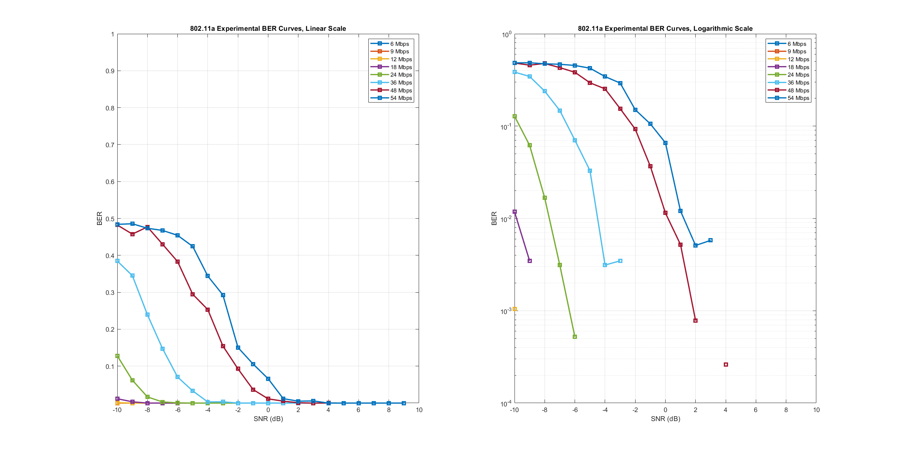

IEEE 802.11a Simulation
Alon S. Levin ECE-408 Wireless Communications Spring 2020
Contents
- Prepare Environment
- Timing related Parameters
- Number of Trials
- RATE-Dependent Parameters
- SNR Values
- Random Signal Generation
- Convolutional Encoding
- Interleaving
- Baseband Modulation
- OFDM Modulation (IFFT + Cyclic Prefix)
- RF Up-Conversion
- Channel
- RF Down-Conversion
- OFDM Demodulation (Cyclic Prefix + FFT)
- Baseband Demodulation
- De-Interleaving
- Viterbi Decoder
- Bit Error Rate
- Plot BER Curves
Prepare Environment
clear, clc, close all % Clear all current variables and outputs format compact % Prepare command line output profile on % Allow for timing information %rng default % Control pRNG to provide same results each time BER = zeros(8, 20); % Prepare BER matrix
Timing related Parameters
Source: IEEE 802.11a-1999 17.3.2.3, Table 79
% Variables % N_sd - Number of data subcarriers % N_sp - Number of pilot subcarriers % delta_f - Subcarrier frequency spacing [Hz] % T_fft - IFFT/FFT period [sec] % T_gi - GI/CP duration [sec] % T_signal - Duration of the signal BPSK-OFDM signal [sec] % N_cp - Number of data points in cyclic prefix N_sd = 48; N_sp = 4; delta_f = 0.3125e6; T_fft = 1/delta_f; T_gi = 0.8e-6; T_signal = T_gi + T_fft;
Number of Trials
numTrials = 20;
for trial_ticker = 1:numTrials
%fprintf('=== BEGINNING TRIAL %i === \n', trial_ticker)
RATE-Dependent Parameters
Source: IEEE 802.11a-1999 17.3.2.2, Table 78
% Desired data rate [Mbits/s] % One of {6, 9, 12, 18, 24, 36, 48, 54} Data_Rate_all = [6, 9, 12, 18, 24, 36, 48, 54]; for Data_Rate_ticker = 1:length(Data_Rate_all)
Data_Rate = Data_Rate_all(Data_Rate_ticker);
% Other Parameters
% Modulation - Modulation scheme
% R - Coding rate
% N_bpsc - Coded bits per subcarrier
% N_cbps - Coded bits per OFDM symbol
% N_dbps - Data bits per OFDM symbol
switch Data_Rate
case 6
Modulation = "BPSK";
R = 1/2;
N_bpsc = 1;
N_cbps = 48;
N_dbps = 24;
case 9
Modulation = "BPSK";
R = 3/4;
N_bpsc = 1;
N_cbps = 48;
N_dbps = 36;
case 12
Modulation = "QPSK";
R = 1/2;
N_bpsc = 2;
N_cbps = 96;
N_dbps = 48;
case 18
Modulation = "QPSK";
R = 3/4;
N_bpsc = 2;
N_cbps = 96;
N_dbps = 72;
case 24
Modulation = "16-QAM";
R = 1/2;
N_bpsc = 4;
N_cbps = 192;
N_dbps = 96;
case 36
Modulation = "16-QAM";
R = 3/4;
N_bpsc = 4;
N_cbps = 192;
N_dbps = 144;
case 48
Modulation = "64-QAM";
R = 2/3;
N_bpsc = 6;
N_cbps = 288;
N_dbps = 192;
case 54
Modulation = "64-QAM";
R = 3/4;
N_bpsc = 6;
N_cbps = 288;
N_dbps = 216;
end
SNR Values
We will use additive white Gaussian noise to model the channel
SNR = linspace(-10, 9, 20);
for SNR_ticker = 1:length(SNR)
currSNR = SNR(SNR_ticker);
%fprintf('== Data Rate %i Mbps ==\n', Data_Rate)
%fprintf('= SNR %i dB =\n', currSNR)
%fprintf('TRANSMITTER: \n\t')
Random Signal Generation
Generate a binary stream of length N_dbps.
%fprintf('Signal Generation: ') signal_original_bi = randi([0,1], N_dbps, 1); %fprintf('Complete!\n\t')
Convolutional Encoding
Source: IEEE 802.11a-1999 17.3.5.5
%fprintf('Convolutional Encoding: ') % Industry-standard generator polynomials, in octal g0 = 133; g1 = 171; k = 7; trellis = poly2trellis(k, [g0, g1]); % Create and apply encoders % Output should be of length N_cbps switch R case 1/2 signal_tx_encoded = convenc(signal_original_bi, trellis); case 3/4 pPatternMat = [1 1 0 1 1 0 1 1 0; ... 1 0 1 1 0 1 1 0 1]; pPatternVec = reshape(pPatternMat, 18, 1); signal_tx_encoded = convenc(signal_original_bi, trellis, pPatternVec); case 2/3 pPatternMat = [1 1 1 1 1 1; ... 1 0 1 0 1 0]; pPatternVec = reshape(pPatternMat, 12, 1); signal_tx_encoded = convenc(signal_original_bi, trellis, pPatternVec); end %fprintf('Complete!\n\t')
Interleaving
Source: IEEE 802.11a-1999 17.3.5.6
%fprintf('Interleaving: ') % Matrix Interleaver signal_tx_interleaved_mat = matintrlv(signal_tx_encoded, N_cbps/16, 16); % General Block Interleaver, Permutations 1&2 signal_tx_interleaved_mid = zeros(size(signal_tx_interleaved_mat)); signal_tx_interleaved = zeros(size(signal_tx_interleaved_mid)); for k = 0:N_cbps-1 i = (N_cbps/16)*mod(k, 16) + floor(k/16); signal_tx_interleaved_mid(i+1) = signal_tx_interleaved_mat(k+1); end s = max(N_bpsc/2, 1); for i = 0:N_cbps-1 j = s*floor(i/s) + mod(i+N_cbps-floor(16*i/N_cbps), s); signal_tx_interleaved(j+1) = signal_tx_interleaved_mid(i+1); end clear i j k s %fprintf('Complete!\n\t')
Baseband Modulation
Source: IEEE 802.11a-1999 17.3.5.7-8
%fprintf('Baseband Modulation: ') % Apply modulation scheme switch Modulation case "BPSK" signal_tx_modulated = qammod(signal_tx_interleaved, 2, 'gray'); case "QPSK" signal_tx_symbols = bi2de(reshape(signal_tx_interleaved, length(signal_tx_interleaved)/log2(4), log2(4))); signal_tx_modulated = qammod(signal_tx_symbols, 4, 'gray'); case "16-QAM" signal_tx_symbols = bi2de(reshape(signal_tx_interleaved, length(signal_tx_interleaved)/log2(16), log2(16))); signal_tx_modulated = qammod(signal_tx_symbols, 16, 'gray'); case "64-QAM" signal_tx_symbols = bi2de(reshape(signal_tx_interleaved, length(signal_tx_interleaved)/log2(64), log2(64))); signal_tx_modulated = qammod(signal_tx_symbols, 64, 'gray'); end % Generate random BPSK-modulated pilot subcarriers pilot_symbols_modulated = 2*randi([0,1], 4, 1) - 1; % Normalize switch Modulation case "BPSK" K_MOD = 1; case "QPSK" K_MOD = 1/sqrt(2); case "16-QAM" K_MOD = 1/sqrt(10); case "64-QAM" K_MOD = 1/sqrt(42); end signal_tx_modulated = K_MOD * signal_tx_modulated; pilot_symbols_modulated = K_MOD * pilot_symbols_modulated; %fprintf('Complete!\n\t')
OFDM Modulation (IFFT + Cyclic Prefix)
Source: IEEE 802.11a-1999 17.3.5.9
%fprintf('OFDM Modulation: ') % Combine data symbols and pilot symbols combined_signal = [signal_tx_modulated(1:5); ... % -26 --> -22 pilot_symbols_modulated(1); ... % -21 signal_tx_modulated(6:18); ... % -20 --> -08 pilot_symbols_modulated(2); ... % -07 signal_tx_modulated(19:24); ... % -06 --> -01 signal_tx_modulated(25:30); ... % 01 --> 06 pilot_symbols_modulated(3); ... % 07 signal_tx_modulated(31:43); ... % 08 --> 20 pilot_symbols_modulated(4); ... % 21 signal_tx_modulated(44:48)]; % 22 --> 26 % Apply the IFFT IFFT_input = [zeros(1,1); ... % Port 0 : Null combined_signal(27:52); ... % Ports 1-26 : 1 > 26 zeros(11, 1); ... % Ports 27-37: Null combined_signal(1:26)]; % Ports 38-63: -26 > -1 IFFT_output = ifft(IFFT_input); % Add the Cyclic Prefix % The cyclic prefix fits into the guard time T_gi, so the number of % samples in it should be a ratio of T_gi to T_fft times the number % of FFT samples N_cp = (T_gi/T_fft) * 64; signal_tx_OFDM = [IFFT_output(64-N_cp+1:64); ... IFFT_output]; %fprintf('Complete!\n\t')
RF Up-Conversion
Source: IEEE 802.11a-1999 17.3.8.3
%fprintf('RF Up-Conversion: ') % Channel Identification % Channels are defined on any channel number between 0 and 200, % but set of valid operating channel numbers is regulated, and so % channel choice is more limited. channel_number = 36; fc = (5e3 + 5*channel_number)*1e6; % Establish a Time Domain % We will use 100 samples per symbol T_sym = T_signal/(N_cp + 64); symbol_time_domain = 0:T_sym/100:(T_sym-T_sym/100); % Up-Convert signal_tx_rf_real = zeros(length(symbol_time_domain)*(N_cp+64), 1); signal_tx_rf_imag = zeros(length(symbol_time_domain)*(N_cp+64), 1); for symbol_ticker = 1:length(signal_tx_OFDM) signal_tx_rf_real(1+(symbol_ticker-1)*length(symbol_time_domain):(symbol_ticker*length(symbol_time_domain))) = ... real(signal_tx_OFDM(symbol_ticker))*cos(2*pi*fc*symbol_time_domain); signal_tx_rf_imag(1+(symbol_ticker-1)*length(symbol_time_domain):(symbol_ticker*length(symbol_time_domain))) = ... imag(signal_tx_OFDM(symbol_ticker))*sin(2*pi*fc*symbol_time_domain); end signal_tx_rf = signal_tx_rf_real + signal_tx_rf_imag; %fprintf('Complete!\n\t')
Channel
A basic AWGN channel
%fprintf('Channel Transmission: ') signal_channel = awgn(signal_tx_rf, currSNR, 'measured'); %fprintf('Complete!\n') %fprintf('RECEIVER: \n\t')
RF Down-Conversion
We will use a coherent detector to separate quadrature & in-phase components
%fprintf('RF Down-Conversion: ') signal_rx_downconverted = zeros(size(signal_tx_OFDM)); for symbol_ticker = 1:length(signal_tx_OFDM) % In-phase detector curr_symbol_in_real = signal_channel(1+(symbol_ticker-1)*length(symbol_time_domain):(symbol_ticker*length(symbol_time_domain))) ... .* cos(2*pi*fc*symbol_time_domain)'; curr_symbol_real = trapz(symbol_time_domain, curr_symbol_in_real) * 2/T_sym; % Quadrature detector curr_symbol_in_imag = signal_channel(1+(symbol_ticker-1)*length(symbol_time_domain):(symbol_ticker*length(symbol_time_domain))) ... .* sin(2*pi*fc*symbol_time_domain)'; curr_symbol_imag = trapz(symbol_time_domain, curr_symbol_in_imag) * 2/T_sym; % Combine signal_rx_downconverted(symbol_ticker) = curr_symbol_real + 1j*curr_symbol_imag; end %fprintf('Complete!\n\t')
OFDM Demodulation (Cyclic Prefix + FFT)
%fprintf('OFDM Demodulation: ') % Remove cyclic prefix signal_rx_noprefix = signal_rx_downconverted(N_cp+1:end); % Apply the FFT signal_rx_FFT_output = fft(signal_rx_noprefix); % Remove pilot subcarriers signal_rx_postOFDM = signal_rx_FFT_output([39:64, 2:27]); signal_rx_data_only = signal_rx_postOFDM([1:5, 7:19, 21:26, 27:32, 34:46, 48:52]); %fprintf('Complete!\n\t')
Baseband Demodulation
%fprintf('Baseband Demodulation: ') % De-Normalize signal_rx_data_only = signal_rx_data_only / K_MOD; % Apply de-modulation scheme switch Modulation case "BPSK" signal_rx_demodulated = qamdemod(signal_rx_data_only, 2, 'gray'); case "QPSK" signal_rx_symbols = qamdemod(signal_rx_data_only, 4, 'gray'); signal_rx_matrix = de2bi(signal_rx_symbols, log2(4)); signal_rx_demodulated = signal_rx_matrix(:); case "16-QAM" signal_rx_symbols = qamdemod(signal_rx_data_only, 16, 'gray'); signal_rx_matrix = de2bi(signal_rx_symbols, log2(16)); signal_rx_demodulated = signal_rx_matrix(:); case "64-QAM" signal_rx_symbols = qamdemod(signal_rx_data_only, 64, 'gray'); signal_rx_matrix = de2bi(signal_rx_symbols, log2(64)); signal_rx_demodulated = signal_rx_matrix(:); end %fprintf('Complete!\n\t')
De-Interleaving
Source: IEEE 802.11a-1999 17.3.5.6
%fprintf('De-Interleaving: ') % General Block Deinterleaver, Permutations 1&2 signal_rx_deinterleaved_mid1 = zeros(size(signal_rx_demodulated)); signal_rx_deinterleaved_mid2 = zeros(size(signal_rx_demodulated)); s = max(N_bpsc/2, 1); for j = 0:N_cbps-1 i = s*floor(j/s) + mod(j + floor(16*j/N_cbps), s); signal_rx_deinterleaved_mid1(i+1) = signal_rx_demodulated(j+1); end for i = 0:N_cbps-1 k = 16*i - ((N_cbps-1)*floor(16*i/N_cbps)); signal_rx_deinterleaved_mid2(k+1) = signal_rx_deinterleaved_mid1(i+1); end clear i j k s % Matrix Deinterleaver signal_rx_deinterleaved = matdeintrlv(signal_rx_deinterleaved_mid2, N_cbps/16, 16); %fprintf('Complete!\n\t')
Viterbi Decoder
Source: IEEE 802.11a-1999 17.3.5.5
%fprintf('Viterbi Decoding: ') % Traceback Depth traceback_depth = 15; % Decode using Viterbi decoder % Output should be of length N_dbps switch R case 1/2 signal_rx_decoded = vitdec(signal_rx_deinterleaved, trellis, traceback_depth, 'trunc', 'hard'); case 3/4 signal_rx_decoded = vitdec(signal_rx_deinterleaved, trellis, traceback_depth, 'trunc', 'hard', pPatternVec); case 2/3 signal_rx_decoded = vitdec(signal_rx_deinterleaved, trellis, traceback_depth, 'trunc', 'hard', pPatternVec); end %fprintf('Complete!\n')
Bit Error Rate
BER(Data_Rate_ticker, SNR_ticker) = BER(Data_Rate_ticker, SNR_ticker) + ...
sum(signal_original_bi ~= signal_rx_decoded)/N_dbps;
end
end
end
BER = BER / numTrials;
Plot BER Curves
figure('Name', 'BER Curves') subplot(1,2,1) for plot_ticker = 1:8 plot(SNR, BER(plot_ticker, :), '-s', 'LineWidth', 2) hold on end ylim([1e-4, 1e0]) legend('6 Mbps', '9 Mbps', '12 Mbps', '18 Mbps', '24 Mbps', '36 Mbps', '48 Mbps', '54 Mbps') title('802.11a Experimental BER Curves, Linear Scale') xlabel('SNR (dB)') xlim([-10 10]) ylabel('BER') grid on subplot(1,2,2) for plot_ticker = 1:8 semilogy(SNR, BER(plot_ticker, :), '-s', 'LineWidth', 2) hold on end ylim([1e-4, 1e0]) legend('6 Mbps', '9 Mbps', '12 Mbps', '18 Mbps', '24 Mbps', '36 Mbps', '48 Mbps', '54 Mbps') title('802.11a Experimental BER Curves, Logarithmic Scale') xlabel('SNR (dB)') xlim([-10 10]) ylabel('BER') grid on